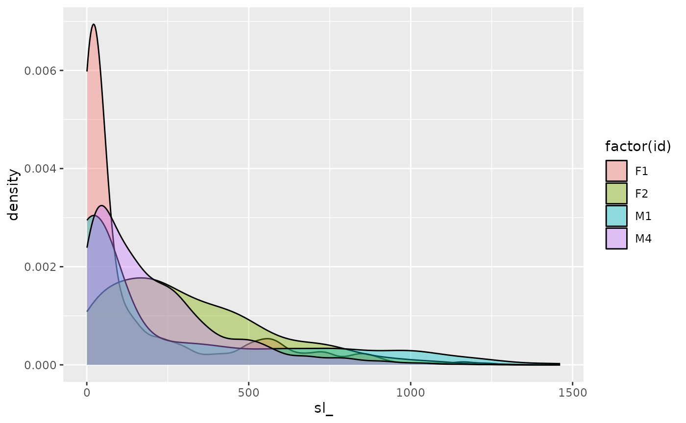

amt
vignettes/p1_getting_started.Rmd
p1_getting_started.RmdThe basic building blocks of amt are tracks. Tracks are
tibbles with at least two columns that contain the
coordinates: x_ and y_. A track behaves
exactly like a tibble (the only difference being that we
added an other S3 class). Below is an example of creating a track with
some dummy locations.
## [1] TRUE
df1## # A tibble: 3 × 2
## x y
## <int> <int>
## 1 1 1
## 2 2 2
## 3 3 3
# Now we can create a track
tr1 <- make_track(df1, x, y)
is.data.frame(tr1)## [1] TRUE
tr1## # A tibble: 3 × 2
## x_ y_
## * <int> <int>
## 1 1 1
## 2 2 2
## 3 3 3At the moment amt supports two types of tracks:
track_xy is a track that only has coordinates, andtrack_xyt is a track that has a timestamp associated to
each coordinate pair.If a track_xy or track_xyt is created with
the function make_track, is determined whether or not a
timestamp is passed as a third argument (called .t) to the
function make_track. In the previous example we only passed
x and y coordinates. Hence a
track_xy was created.
class(tr1)## [1] "track_xy" "tbl_df" "tbl" "data.frame"To create a track_xyt we could do the following
df1 <- tibble(x = 1:3, y = 1:3, t = lubridate::ymd("2017-01-01") + lubridate::days(0:2))
tr2 <- make_track(df1, x, y, t)
class(tr2)## [1] "track_xyt" "track_xy" "tbl_df" "tbl" "data.frame"From the output above we see that a track_xyt is also a
track_xy. This means that all methods for
track_xy also work for a track_xyt (but not
the reverse).
We can also add additional information for each relocation (e.g., the
id of the animal, or some other sensor information such as the DOP). Any
number of additional named columns can be passed to
make_track. By named we mean, that columns should always be
passed in the form of column_name = content to avoid
confusion with coordinates and time stamp. We will extend the dummy
example from above, by passing 2 more columns (the id of animal and the
age).
df1 <- tibble(x = 1:3, y = 1:3, t = lubridate::ymd("2017-01-01") + lubridate::days(0:2),
id = 1, age = 4)
# first we only create a track_xy
tr3 <- make_track(df1, x, y, id = id, age = age)
tr3## # A tibble: 3 × 4
## x_ y_ id age
## * <int> <int> <dbl> <dbl>
## 1 1 1 1 4
## 2 2 2 1 4
## 3 3 3 1 4
# now lets create a track_xyt
tr4 <- make_track(df1, x, y, t, id = id, age = age)
tr4## # A tibble: 3 × 5
## x_ y_ t_ id age
## * <int> <int> <date> <dbl> <dbl>
## 1 1 1 2017-01-01 1 4
## 2 2 2 2017-01-02 1 4
## 3 3 3 2017-01-03 1 4make_track has one further optional argument
(crs), which allows the user to set a coordinate reference
system (CRS) of the track. The CRS needs to be provided as valid EPSG
code.
In the amt relocation data of one red deer from northern
Germany is included. We will use this data set to to illustrate how to
create a track.
We begin with loading and inspecting the data.
## x_epsg31467 y_epsg31467 day time
## 1 3558403 5999400 2009-02-13 00:02:23
## 2 3558548 5999099 2009-02-13 06:02:21
## 3 3558541 5999019 2009-02-13 12:01:51
## 4 3558453 5999026 2009-02-13 18:00:55
## 5 3558566 5999365 2009-02-14 00:01:36
## 6 3557836 5999185 2009-02-14 06:02:24Before creating a track, we have to do some data cleaning:
# check if all observations are complete
all(complete.cases(sh)) # no action required## [1] TRUE
# parse date and time and create time stamps
sh$ts <- as.POSIXct(lubridate::ymd(sh$day) +
lubridate::hms(sh$time))
# check for duplicated time stamps
any(duplicated(sh$ts))## [1] TRUE
# We have some duplicated time stamps, these need to be removed prior to
# creating a track.
sh <- sh[!duplicated(sh$ts), ]
# create new columns
sh$id <- "Animal 1"
sh$month <- lubridate::month(sh$ts)Now we can create a track.
tr1 <- make_track(sh, x_epsg31467, y_epsg31467, ts, id = id, month = month)The column names of the data set already indicate the CRS of the data. We can add this information when creating a track.
tr1 <- make_track(sh, x_epsg31467, y_epsg31467, ts, id = id, month = month,
crs = 31467)|>)
amt was heavily inspired through workflows suggested by
the popular packages from the tidyverse. The above steps
could easily be connected using pipes. Note that result will be exactly
the same.
data(sh)
tr2 <- sh |> filter(complete.cases(sh)) |>
mutate(
ts = as.POSIXct(lubridate::ymd(day) + lubridate::hms(time)),
id = "Animal 1",
month = lubridate::month(ts)
) |>
filter(!duplicated(ts)) |>
make_track(x_epsg31467, y_epsg31467, ts, id = id, month = month,
crs = 31467)
tr2## # A tibble: 1,493 × 5
## x_ y_ t_ id month
## * <int> <int> <dttm> <chr> <dbl>
## 1 3558528 5999094 2008-03-30 00:01:47 Animal 1 3
## 2 3558513 5999055 2008-03-30 06:00:54 Animal 1 3
## 3 3558564 5999146 2008-03-30 12:01:47 Animal 1 3
## 4 3558504 5999072 2008-03-30 18:01:24 Animal 1 3
## 5 3558495 5999051 2008-03-30 18:25:56 Animal 1 3
## 6 3558493 5999052 2008-03-30 18:26:05 Animal 1 3
## 7 3558489 5999051 2008-03-30 18:26:14 Animal 1 3
## 8 3558486 5999046 2008-03-30 18:26:24 Animal 1 3
## 9 3558484 5999052 2008-03-30 18:26:33 Animal 1 3
## 10 3558317 5998989 2008-03-30 18:38:01 Animal 1 3
## # ℹ 1,483 more rowsRemember, that a track_xy* behaves like regular a
data.frame. This means that we can use all data
manipulation verbs that we are used to from base R or the
tidyverse. For example, we can filter a track based on some
characteristic. As an example we extract all relocations from the month
May.
## [1] "track_xyt" "track_xy" "tbl_df" "tbl" "data.frame"If we set the CRS when creating a track (we can verify this with
has_crs), we can transform the CRS of the coordinates with
the function transform_coords (a wrapper around
sf::st_transform()). For illustration, we will transform
the CRS of tr2 to geographical coordinates (EPSG:4326).
transform_coords(tr2, 4326)## # A tibble: 1,493 × 5
## x_ y_ t_ id month
## * <dbl> <dbl> <dttm> <chr> <dbl>
## 1 9.89 54.1 2008-03-30 00:01:47 Animal 1 3
## 2 9.89 54.1 2008-03-30 06:00:54 Animal 1 3
## 3 9.89 54.1 2008-03-30 12:01:47 Animal 1 3
## 4 9.89 54.1 2008-03-30 18:01:24 Animal 1 3
## 5 9.89 54.1 2008-03-30 18:25:56 Animal 1 3
## 6 9.89 54.1 2008-03-30 18:26:05 Animal 1 3
## 7 9.89 54.1 2008-03-30 18:26:14 Animal 1 3
## 8 9.89 54.1 2008-03-30 18:26:24 Animal 1 3
## 9 9.89 54.1 2008-03-30 18:26:33 Animal 1 3
## 10 9.89 54.1 2008-03-30 18:38:01 Animal 1 3
## # ℹ 1,483 more rowsSeveral functions for calculating derived quantities are available.
We will start with looking at step length. The function
step_lengths can be used for this.
tr2 <- tr2 |> mutate(sl_ = step_lengths(tr2))If we look at a summary of sl_ we note two things:
summary(tr2$sl_)## Min. 1st Qu. Median Mean 3rd Qu. Max. NA's
## 0.00 35.01 105.33 249.07 297.75 4727.86 1Note, 1) there is a NA for the last step length, this is
expected because we are still in a point representation (i.e., there is
no step length for the last relocation). 2) the range is fairly large
ranging from 0 to almost 5 km. Before looking at step lengths in any
further detail, we will have to make sure the sampling rate is more or
less regular (i.e., the same time step between any two points).
The function summarize_sampling_rate provides an easy
way to look at the sampling rate.
## # A tibble: 1 × 9
## min q1 median mean q3 max sd n unit
## <dbl> <dbl> <dbl> <dbl> <dbl> <dbl> <dbl> <int> <chr>
## 1 0.0025 2.00 2.01 6.34 6.00 3924. 102. 1492 hourThis suggests that a sampling rate for 6 hours might be adequate. We
can then use the function track_resample to resample the
track and only keep relocations that are approximately 6 hours apart
(within some tolerance, that can be specified). We will use the function
lubridate::hours to specify the sampling rate and
lubridate::minutes to specify the tolerance. Both arguments
rate and tolerance are expected to be a
Period.
tr3 <- tr2 |> track_resample(rate = hours(6), tolerance = minutes(20))
tr3## # A tibble: 826 × 7
## x_ y_ t_ id month sl_ burst_
## * <int> <int> <dttm> <chr> <dbl> <dbl> <dbl>
## 1 3558528 5999094 2008-03-30 00:01:47 Animal 1 3 41.8 1
## 2 3558513 5999055 2008-03-30 06:00:54 Animal 1 3 104. 1
## 3 3558564 5999146 2008-03-30 12:01:47 Animal 1 3 95.3 1
## 4 3558504 5999072 2008-03-30 18:01:24 Animal 1 3 22.8 1
## 5 3557474 5999130 2008-03-31 00:01:23 Animal 1 3 155. 1
## 6 3557319 5999127 2008-03-31 06:01:45 Animal 1 3 6.08 1
## 7 3557313 5999126 2008-03-31 12:01:11 Animal 1 3 4.47 1
## 8 3557317 5999128 2008-03-31 18:01:55 Animal 1 3 113. 1
## 9 3557204 5999130 2008-04-01 00:01:24 Animal 1 4 187. 1
## 10 3557108 5999291 2008-04-01 06:00:54 Animal 1 4 6.32 1
## # ℹ 816 more rowstr3 still a track, but with two differences compared to
tr2. 1) the number of rows is reduced from 1493 to 826,
because only relocations that are 6 hours +/- the tolerance apart of
each other are retained; 2) tr3 has one new column called
burst_. A burst is sequence of relocations with equal
sampling rates. Consider the following hypothetical example: 5
relocations are all 6 hours apart. Then there is a gap of 12 hours
because one relocation failed and afterwards then there are an other 10
relocations all 6 hours apart. Then we would consider the first 5
relocations as a burst and the second 10 relocations (after the 12 hour
gap) as a second burst.
In many situations we are more interested in steps (that is the
animal moving from one relocation to an other, or the straight line
between a start and a end point), that in the individual relocations.
amt supports steps as an other way to
represent movement data. The transition from a track to steps can be
done via two functions.
steps(): Takes as an input a track, converts the track
to step and calculating some derived quantities (e.g., step lengths,
turning angles). The function steps() expects a track with
regular sampling rates.steps_by_burst(): Takes as an input a resampled track
(i.e., a track with several bursts) and will calculate derived
quantities per burst.Up to now we have only considered situations with one animal.
However, in most telemetry studies more than one animal are tracked and
we often want to calculated movement relevant characteristics for
several animals individually. amt does not provide a
infrastructure for dealing with several animal, however,
list-columns from the tidyverse can be used to
manage many animals. Because a track is just a tibble all
tidyverse verbs can be used. The general strategy consists
of three steps:
list-column
with tracks.mutate
and map (instead of map also
lapply could be used).select()
we can select columns of interest and reverse the nesting with the
function unnest().As an example we will use a second data set included in
amt on tracks of four fishers. We will load the data,
create a track, resample the tracks individually to 30 min and create a
histogram of step lengths (accounting for bursts).
We start by loading the data and creating a track of all individuals together
data("amt_fisher")
trk <- amt_fisher |> make_track(x_, y_, t_, id = id)Next, we group the track by id and nest the track.
trk1 <- trk |> nest(data = -"id")
trk1## # A tibble: 4 × 2
## id data
## <chr> <list>
## 1 M1 <trck_xyt [919 × 3]>
## 2 M4 <trck_xyt [8,958 × 3]>
## 3 F2 <trck_xyt [3,004 × 3]>
## 4 F1 <trck_xyt [1,349 × 3]>We now want to resample each track to 30 minutes with a tolerance of 5 minutes and create steps for each animal. For the first animal we would do as follows:
# get the data for the first animal
x <- trk1$data[[1]]
# apply the data analysis
x |> track_resample(rate = minutes(30), tolerance = minutes(5)) |>
steps_by_burst()## # A tibble: 412 × 11
## burst_ x1_ x2_ y1_ y2_ sl_ direction_p ta_
## * <dbl> <dbl> <dbl> <dbl> <dbl> <dbl> <dbl> <dbl>
## 1 1 1782673. 1782683. 2402297. 2402292. 10.6 -0.427 NA
## 2 1 1782683. 1782681. 2402292. 2402297. 4.96 2.08 2.51
## 3 1 1782681. 1782683. 2402297. 2402298. 2.19 0.464 -1.62
## 4 1 1782683. 1782682. 2402298. 2402290. 7.50 -1.68 -2.15
## 5 1 1782682. 1782684. 2402290. 2402298. 8.01 1.24 2.92
## 6 1 1782684. 1782685. 2402298. 2402274. 24.2 -1.54 -2.78
## 7 1 1782685. 1782669. 2402274. 2402309. 38.8 1.98 -2.76
## 8 1 1782669. 1782679. 2402309. 2402299. 13.6 -0.825 -2.80
## 9 1 1782679. 1782679. 2402299. 2402304. 5.26 1.52 2.34
## 10 1 1782679. 1782699. 2402304. 2402273. 37.2 -1.00 -2.52
## # ℹ 402 more rows
## # ℹ 3 more variables: t1_ <dttm>, t2_ <dttm>, dt_ <drtn>We now want to apply exactly the same logic to all animals. We can do
this by using a map and save the results to a new column
using mutate.
trk2 <- trk1 |>
mutate(steps = map(data, function(x)
x |> track_resample(rate = minutes(30), tolerance = minutes(5)) |> steps_by_burst()))
trk2## # A tibble: 4 × 3
## id data steps
## <chr> <list> <list>
## 1 M1 <trck_xyt [919 × 3]> <brstd_s_ [412 × 11]>
## 2 M4 <trck_xyt [8,958 × 3]> <brstd_s_ [850 × 11]>
## 3 F2 <trck_xyt [3,004 × 3]> <brstd_s_ [308 × 11]>
## 4 F1 <trck_xyt [1,349 × 3]> <brstd_s_ [413 × 11]>Finally, we can select id and steps, unnest
the new data_frame and create a plot of the step-length
distributions.
trk2 |> select(id, steps) |> unnest(cols = steps) |>
ggplot(aes(sl_, fill = factor(id))) + geom_density(alpha = 0.4)
sessioninfo::session_info()## ─ Session info ───────────────────────────────────────────────────────────────
## setting value
## version R version 4.3.3 (2024-02-29)
## os Ubuntu 22.04.4 LTS
## system x86_64, linux-gnu
## ui X11
## language en
## collate C.UTF-8
## ctype C.UTF-8
## tz UTC
## date 2024-04-01
## pandoc 3.1.11 @ /opt/hostedtoolcache/pandoc/3.1.11/x64/ (via rmarkdown)
##
## ─ Packages ───────────────────────────────────────────────────────────────────
## package * version date (UTC) lib source
## amt * 0.2.2.0 2024-04-01 [1] local
## backports 1.4.1 2021-12-13 [1] RSPM
## bslib 0.7.0 2024-03-29 [1] RSPM
## cachem 1.0.8 2023-05-01 [1] RSPM
## checkmate 2.3.1 2023-12-04 [1] RSPM
## class 7.3-22 2023-05-03 [3] CRAN (R 4.3.3)
## classInt 0.4-10 2023-09-05 [1] RSPM
## cli 3.6.2 2023-12-11 [1] RSPM
## colorspace 2.1-0 2023-01-23 [1] RSPM
## data.table 1.15.4 2024-03-30 [1] RSPM
## DBI 1.2.2 2024-02-16 [1] RSPM
## desc 1.4.3 2023-12-10 [1] RSPM
## digest 0.6.35 2024-03-11 [1] RSPM
## dplyr * 1.1.4 2023-11-17 [1] RSPM
## e1071 1.7-14 2023-12-06 [1] RSPM
## evaluate 0.23 2023-11-01 [1] RSPM
## fansi 1.0.6 2023-12-08 [1] RSPM
## farver 2.1.1 2022-07-06 [1] RSPM
## fastmap 1.1.1 2023-02-24 [1] RSPM
## fs 1.6.3 2023-07-20 [1] RSPM
## generics 0.1.3 2022-07-05 [1] RSPM
## ggplot2 * 3.5.0 2024-02-23 [1] RSPM
## glue 1.7.0 2024-01-09 [1] RSPM
## gtable 0.3.4 2023-08-21 [1] RSPM
## highr 0.10 2022-12-22 [1] RSPM
## htmltools 0.5.8 2024-03-25 [1] RSPM
## jquerylib 0.1.4 2021-04-26 [1] RSPM
## jsonlite 1.8.8 2023-12-04 [1] RSPM
## KernSmooth 2.23-22 2023-07-10 [3] CRAN (R 4.3.3)
## knitr 1.45 2023-10-30 [1] RSPM
## labeling 0.4.3 2023-08-29 [1] RSPM
## lattice 0.22-5 2023-10-24 [3] CRAN (R 4.3.3)
## lifecycle 1.0.4 2023-11-07 [1] RSPM
## lubridate 1.9.3 2023-09-27 [1] RSPM
## magrittr 2.0.3 2022-03-30 [1] RSPM
## Matrix 1.6-5 2024-01-11 [3] CRAN (R 4.3.3)
## memoise 2.0.1 2021-11-26 [1] RSPM
## munsell 0.5.0 2018-06-12 [1] RSPM
## pillar 1.9.0 2023-03-22 [1] RSPM
## pkgconfig 2.0.3 2019-09-22 [1] RSPM
## pkgdown 2.0.7 2022-12-14 [1] any (@2.0.7)
## proxy 0.4-27 2022-06-09 [1] RSPM
## purrr 1.0.2 2023-08-10 [1] RSPM
## R6 2.5.1 2021-08-19 [1] RSPM
## ragg 1.3.0 2024-03-13 [1] RSPM
## rbibutils 2.2.16 2023-10-25 [1] RSPM
## Rcpp 1.0.12 2024-01-09 [1] RSPM
## Rdpack 2.6 2023-11-08 [1] RSPM
## rlang 1.1.3 2024-01-10 [1] RSPM
## rmarkdown 2.26 2024-03-05 [1] RSPM
## sass 0.4.9 2024-03-15 [1] RSPM
## scales 1.3.0 2023-11-28 [1] RSPM
## sessioninfo 1.2.2 2021-12-06 [1] RSPM
## sf 1.0-16 2024-03-24 [1] RSPM
## survival 3.5-8 2024-02-14 [3] CRAN (R 4.3.3)
## systemfonts 1.0.6 2024-03-07 [1] RSPM
## textshaping 0.3.7 2023-10-09 [1] RSPM
## tibble 3.2.1 2023-03-20 [1] RSPM
## tidyr 1.3.1 2024-01-24 [1] RSPM
## tidyselect 1.2.1 2024-03-11 [1] RSPM
## timechange 0.3.0 2024-01-18 [1] RSPM
## units 0.8-5 2023-11-28 [1] RSPM
## utf8 1.2.4 2023-10-22 [1] RSPM
## vctrs 0.6.5 2023-12-01 [1] RSPM
## withr 3.0.0 2024-01-16 [1] RSPM
## xfun 0.43 2024-03-25 [1] RSPM
## yaml 2.3.8 2023-12-11 [1] RSPM
##
## [1] /home/runner/work/_temp/Library
## [2] /opt/R/4.3.3/lib/R/site-library
## [3] /opt/R/4.3.3/lib/R/library
##
## ──────────────────────────────────────────────────────────────────────────────